Verwenden des Clients
Der Nextcloud-Desktop-Client läuft im Hintergrund. Öffnen Sie seine Einstellungen unter Windows und Linux über den Infobereich der Taskleiste oder unter macOS über die Menüleiste.
Konto hinzufügen
Um ein weiteres Nextcloud-Konto zu verbinden, öffnen Sie den Einstellungsdialog und klicken Sie in der Seitenleiste auf Konto hinzufügen. Geben Sie die Adresse ein, mit der Sie Ihren Nextcloud-Server im Browser aufrufen, und klicken Sie dann auf Anmelden.

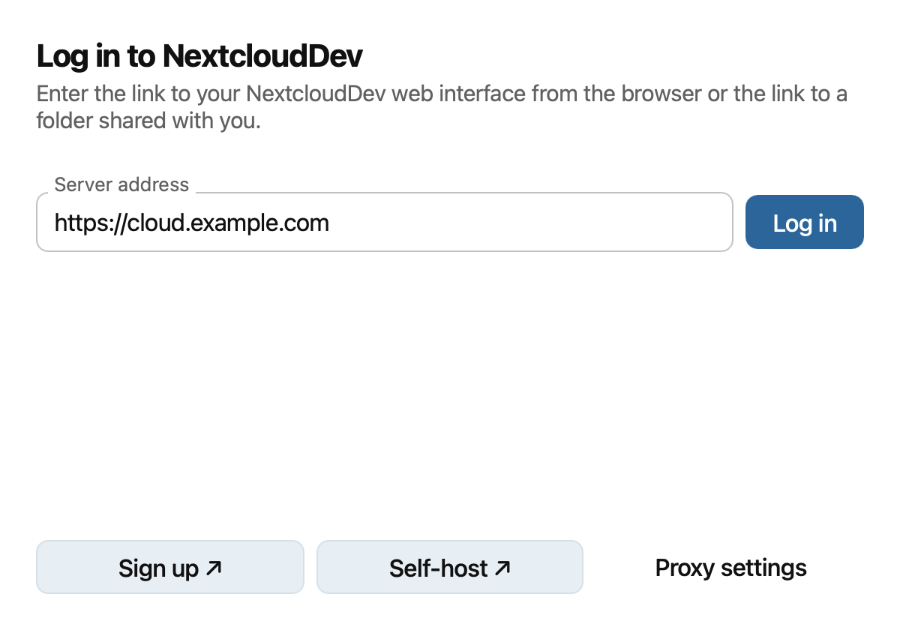
Wenn Ihr Netzwerk einen Proxy erfordert, klicken Sie vor der Anmeldung auf Proxy-Einstellungen. Wählen Sie den System-Proxy oder geben Sie Ihre Proxy-Einstellungen manuell ein und klicken Sie dann auf Fertig.

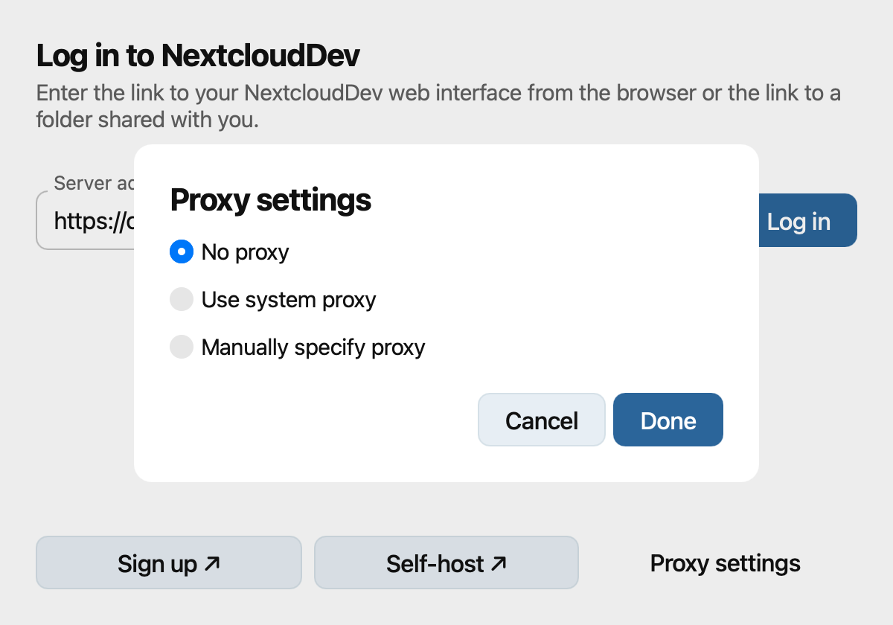
Wenn die sichere Verbindung fehlschlägt, überprüfen Sie die Serveradresse und wenden Sie sich an Ihre Serveradministration. Der Assistent bietet möglicherweise an, ohne TLS zu verbinden oder ein Client-Zertifikat zu verwenden. Verwenden Sie Client-Zertifikat verwenden nur, wenn Ihr Server eines erfordert.

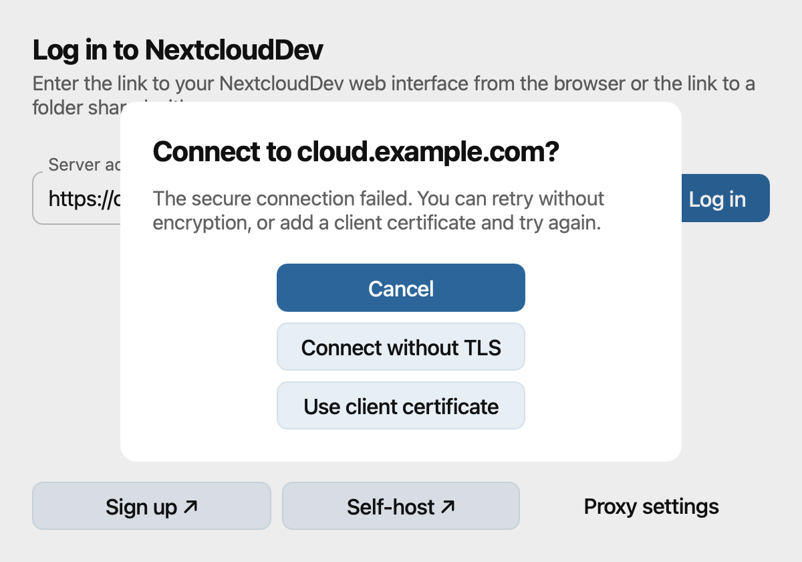
Wenn Sie nach einem Client-Zertifikat gefragt werden, wählen Sie die PKCS#12-Datei aus, die Sie von Ihrer Administration erhalten haben, geben Sie deren Passwort ein und klicken Sie auf Verbinden.

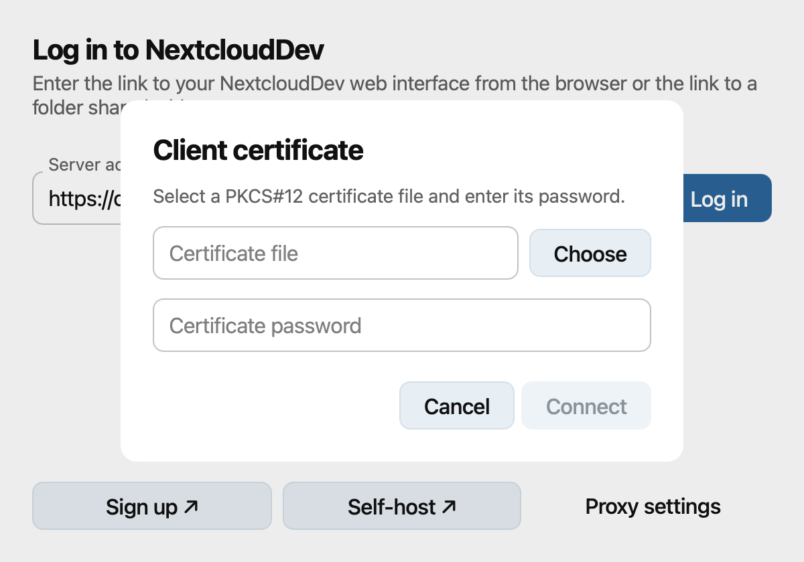
Der Assistent fordert Sie auf, zu Ihrem Browser zu wechseln. Klicken Sie auf Öffnen, wenn sich der Browser nicht automatisch öffnet. Melden Sie sich an und gewähren Sie dem Desktop-Client bei Aufforderung Zugriff. Kehren Sie dann zum Assistenten zurück.

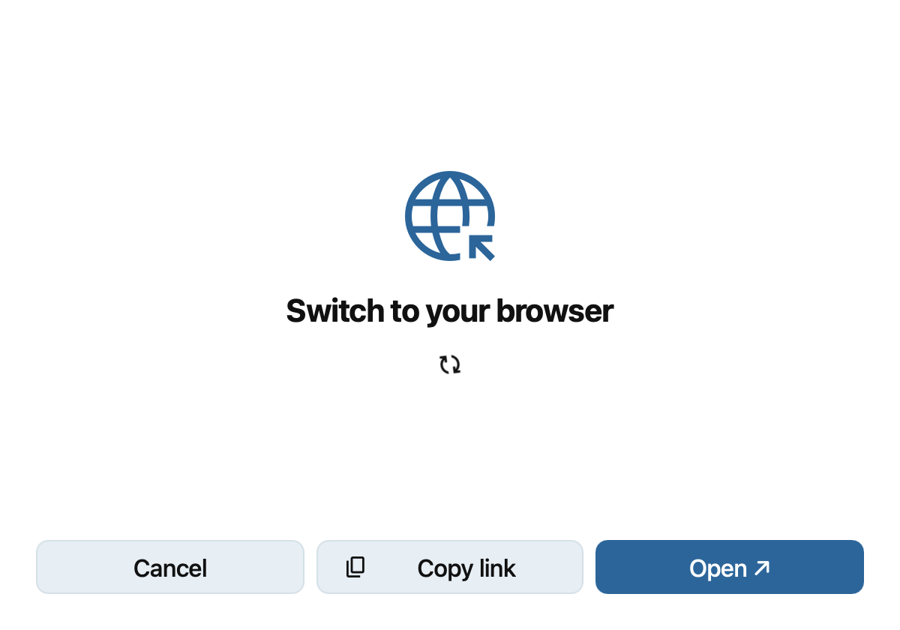
Wählen Sie aus, wie Ihre Dateien synchronisiert werden sollen. Wählen Sie bei der klassischen Synchronisierung Alles synchronisieren oder Auswählen, was synchronisiert werden soll. Mit Auswählen neben Lokaler Synchronisierungsordner können Sie ändern, wo Dateien gespeichert werden; klicken Sie dann auf Fertig.

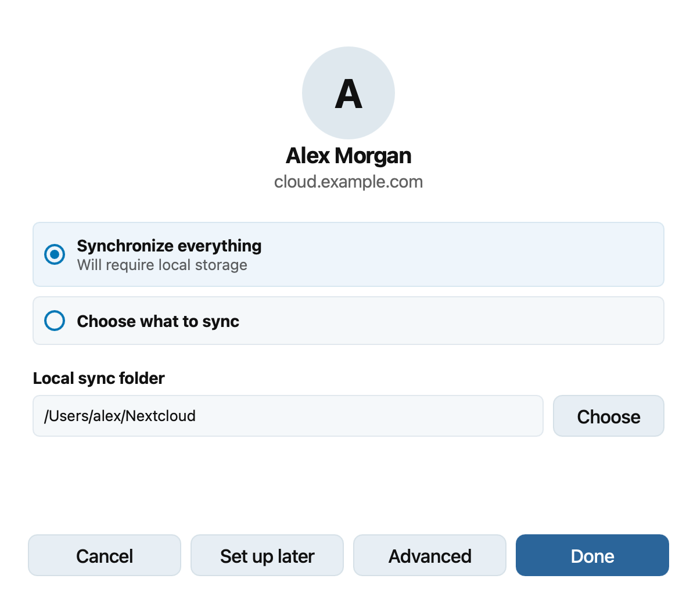
Sie können File Provider wählen, um Dateien bei Bedarf herunterzuladen. Klicken Sie auf Fertig, um das Hinzufügen des Kontos abzuschließen. Unter macOS finden Sie unter Verwendung des macOS-Dateianbieters Einzelheiten zur Finder-Integration.

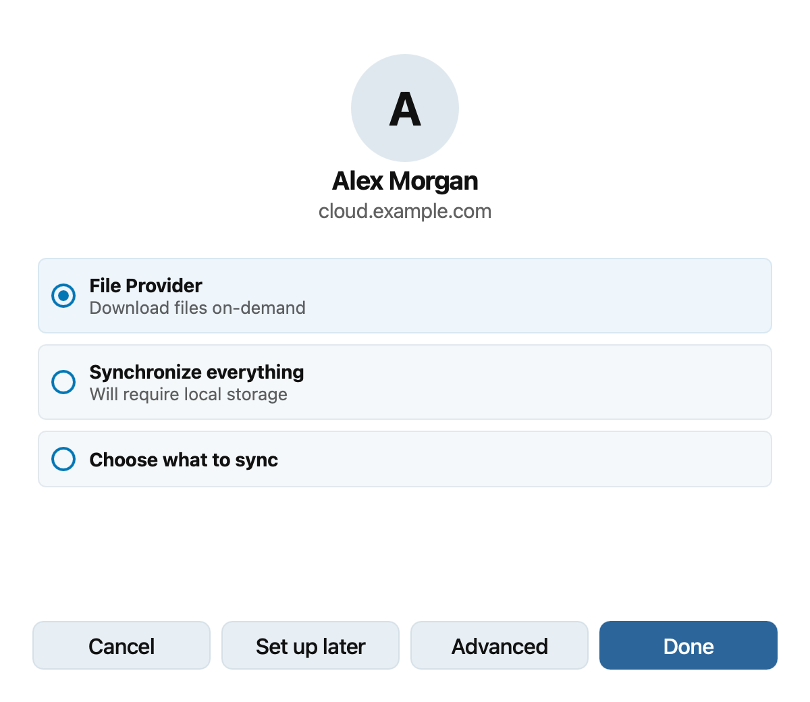
Klicken Sie vor dem Abschluss der klassischen Synchronisierung auf Erweitert, wenn Sie vor dem Synchronisieren großer Ordner oder externer Speicher eine Bestätigung wünschen. Legen Sie Ihre Einstellungen unter Erweiterte Optionen fest und klicken Sie dann auf Fertig, um zum Assistenten zurückzukehren.

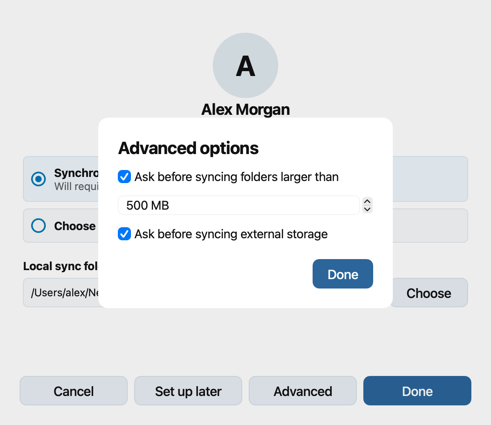
Einstellungsdialog
Wählen Sie in der Seitenleiste ein Konto aus, um dessen Synchronisierungsstatus, lokalen Ordner, Speichernutzung und Verbindungseinstellungen zu sehen. Mit Ordnersynchronisierung hinzufügen richten Sie einen weiteren klassischen Synchronisierungsordner für dieses Konto ein. Auf derselben Seite können Sie sich abmelden oder das Konto entfernen.

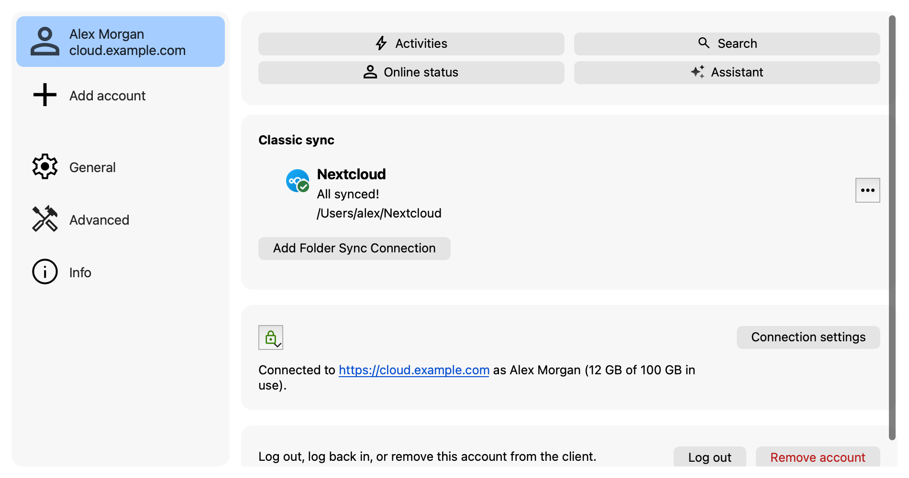
Unter Allgemein legen Sie fest, ob der Client beim Systemstart gestartet wird, ob einfarbige Symbole verwendet und ob Benachrichtigungen angezeigt werden. Unter macOS können Sie außerdem File Provider für alle Konten aktivieren. Diese Einstellung ersetzt klassische Synchronisierungsordner und deren Finder-Integration.

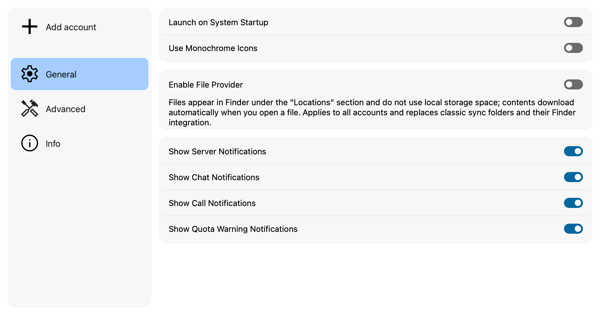
Unter Erweitert legen Sie Schwellenwerte für Bestätigungen bei großen Ordnern und externen Speichern fest. Außerdem können Sie das Abfrageintervall des Servers anpassen, festlegen, ob entfernte Dateien in den Papierkorb verschoben werden, ignorierte Dateien bearbeiten oder ein Debug-Archiv erstellen.

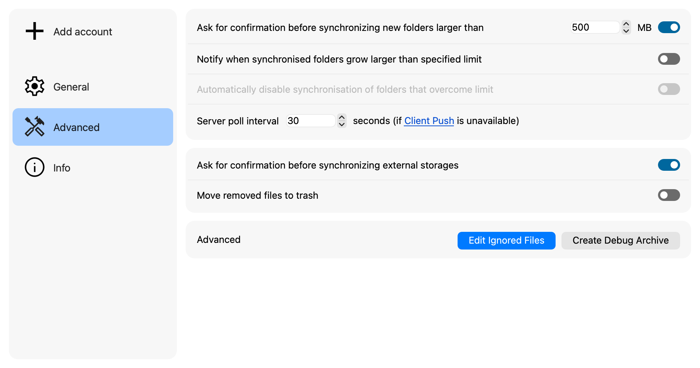
Um Dateien oder Ordner von der Synchronisierung auszuschließen, klicken Sie unter Erweitert auf Ignorierte Dateien bearbeiten. Fügen Sie für jedes Element, das ignoriert werden soll, ein Muster hinzu. Ein Sternchen (*) steht für eine beliebige Anzahl von Zeichen, ein Fragezeichen (?) für genau ein Zeichen, und ein abschließender Schrägstrich (/) beschränkt ein Muster auf Ordner. Wählen Sie Löschen erlauben nur für ignorierte Elemente, die der Client entfernen darf, wenn sie das Löschen eines Ordners verhindern. Klicken Sie zum Speichern auf OK.

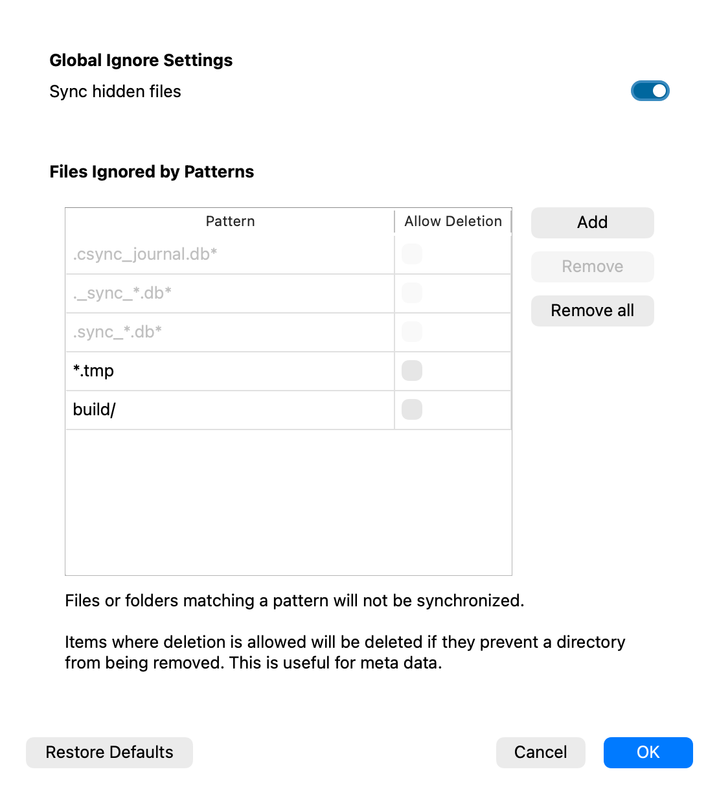
Unter Info können Sie die Version des Desktop-Clients prüfen und die Benutzerdokumentation oder das Impressum öffnen.

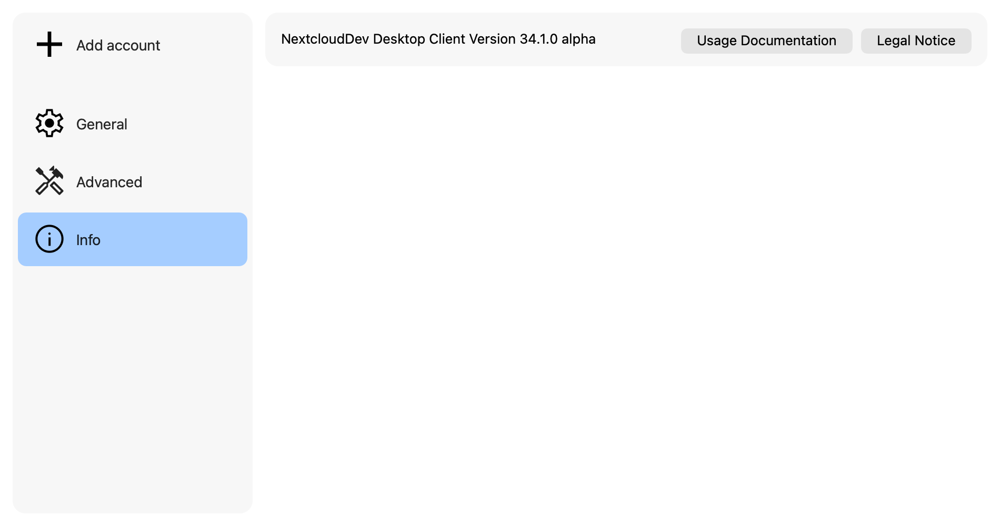
Symbol im Infobereich
Der Desktop-Client zeigt unter Windows und Linux im Infobereich der Taskleiste bzw. unter macOS in der Menüleiste ein Statussymbol an. Für dieselben Synchronisierungszustände stehen farbige Statussymbole sowie farbige oder einfarbige Symbole für den Infobereich zur Verfügung. Einfarbige Symbole können Sie im Einstellungsdialog unter Allgemein auswählen.
Zustand |
Status |
Einfarbig (Infobereich) |
Farbig (Infobereich) |
|---|---|---|---|
Aktuell und verbunden |
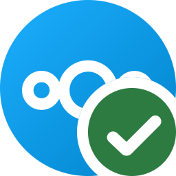 |
||
Synchronisierung |
|||
Pausiert |
|||
Offline |
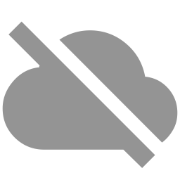 |
||
Achtung; Den Client für Details öffnen |
|||
Fehler; Den Client für Details öffnen |


Öffnen Sie das Symbol im Infobereich bzw. in der Menüleiste, um den Client und seine verfügbaren Aktionen anzuzeigen, etwa das Pausieren oder Fortsetzen der Synchronisierung.
Dateimanager-Overlay-Symbole
Bei klassischen Synchronisierungsordnern fügt der Desktop-Client den Dateien im Dateimanager Overlay-Symbole hinzu. Ein grünes Häkchen bedeutet, dass eine Datei aktuell ist. Ein Warnsymbol kann bedeuten, dass eine Datei ignoriert wird; ein rotes X weist auf einen Synchronisierungsfehler hin. Ein blaues Symbol zeigt eine Datei an, die auf die Synchronisierung wartet oder gerade synchronisiert wird. Wenn der Client offline ist, zeigt er keine Overlays für den aktuellen Synchronisierungszustand des Ordners an.
Das Overlay eines Ordners spiegelt Synchronisierungsfehler in seinem Inhalt wider. Ignorierte Dateien ändern den Status des übergeordneten Ordners nicht. Unter macOS verwendet File Provider die standardmäßigen Statusanzeigen des Finders, die unter Verwendung des macOS-Dateianbieters beschrieben sind.